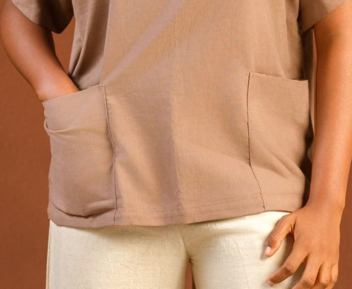
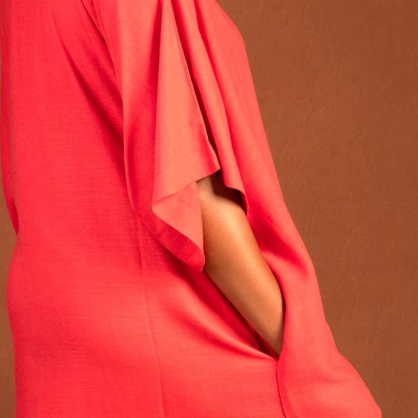
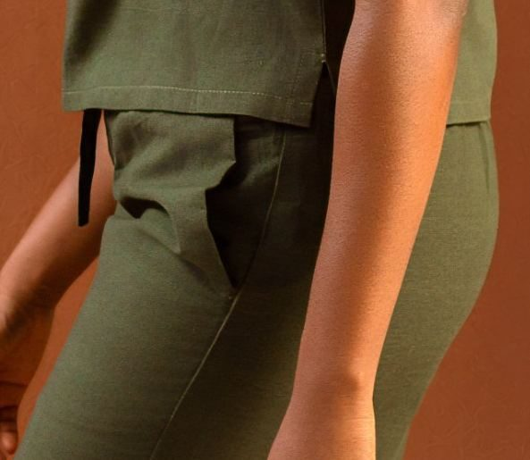
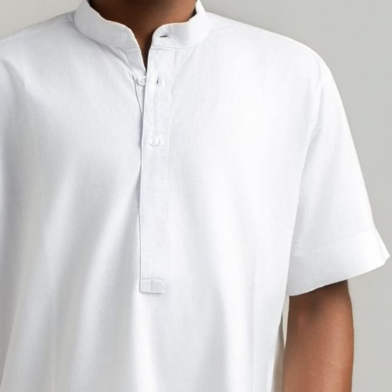

The whole world
Clothing for those who inhabit the world on purpose.
Made to measure · Lagos, Nigeria · See the collection
DÚNÍYÀ means the world, the whole of it. The house exists to bring people and cultures closer through clothing, beginning from Nigeria and reaching outward.
We make clothes for people who know they are made in the image of God. They read, travel and ask questions. They build businesses, raise families and make things. They want what they wear to be part of how they live, chosen with the same care.
We call this a philosophical uniform. Good clothing should carry meaning without needing a speech to explain it.
Every line, pocket and seam is there for a reason. If a detail has no job, it comes off.
We create rather than follow trends. A DÚNÍYÀ piece should still make sense when the trend is gone.
We respect the wearer. You will know our clothes by silhouette, fabric and proportion, not by a logo.
Relaxed silhouettes in natural fabric. Hover a look to see it from another angle.
Every look is made to order in your measurements. Send the look name on WhatsApp to enquire.


Linen, cotton, poplin, chambray, waffle, jonkoso and lace. Each chosen for how it moves, breathes and ages.
Relaxed silhouettes with a clear structure. ¾ lengths, considered necklines and waists that sit where they should.
A two-pocket front, a V-neck collar, a clean seam. Small decisions you notice up close.
Our tailors make each garment for the person wearing it, so it works in real life and lasts.




In 2020 the founder saw clothing as a way for people to meet other cultures, carry something of home across great distances, and feel the world grow a little smaller. The business started quietly with minimal menswear and custom tailoring. Later, we recognised that the first vision and the work we were building were the same thing.
We engage cultures through the people who carry them, while discerning the beliefs and practices those cultures contain.
Pick a piece or a full look from the collection. Note the look number.
Send the look number on WhatsApp Business. We reply with the price and fabric options.
We guide you through measuring, or you can book a fitting in Lagos.
We confirm the lead time before cutting begins, then deliver to your door.
Tell us the look number, your city and any questions about fit, fabric or timing. A person from the house will answer.
+234 000 000 0000